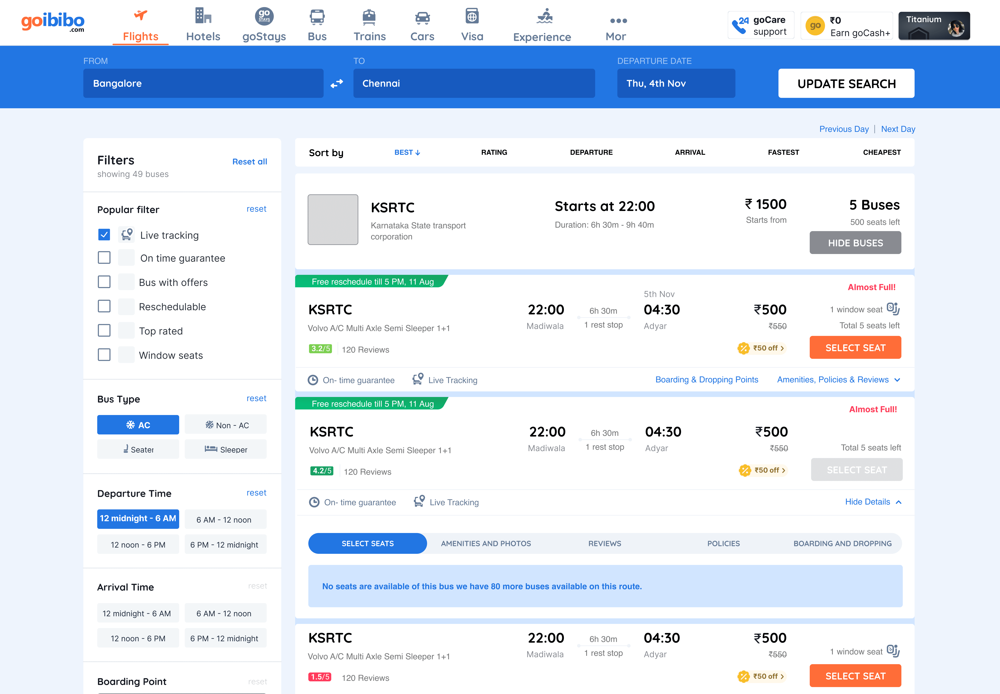
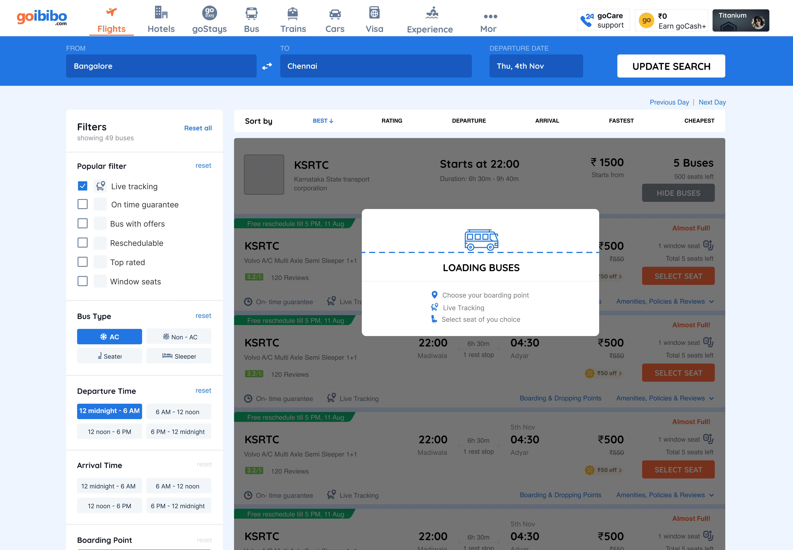
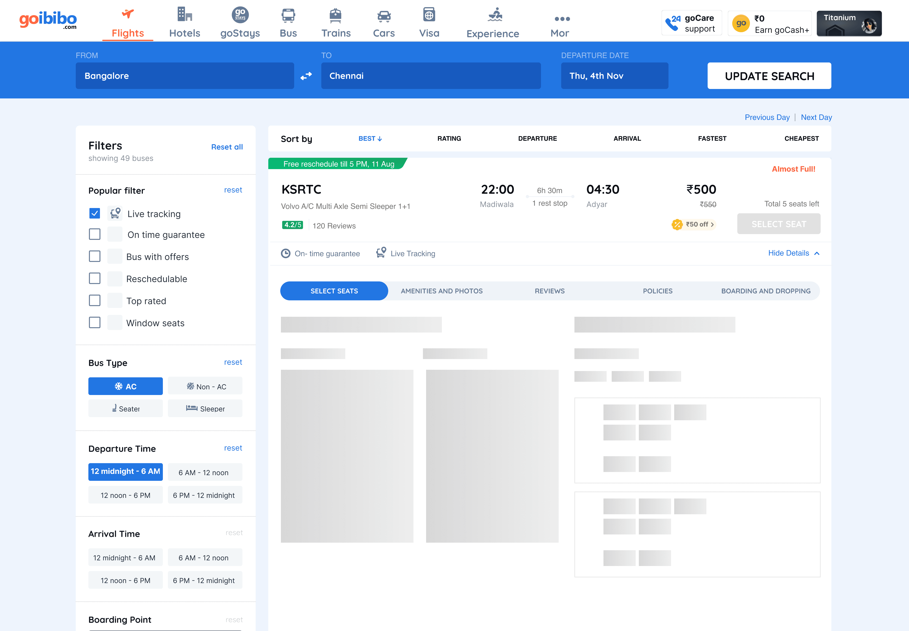
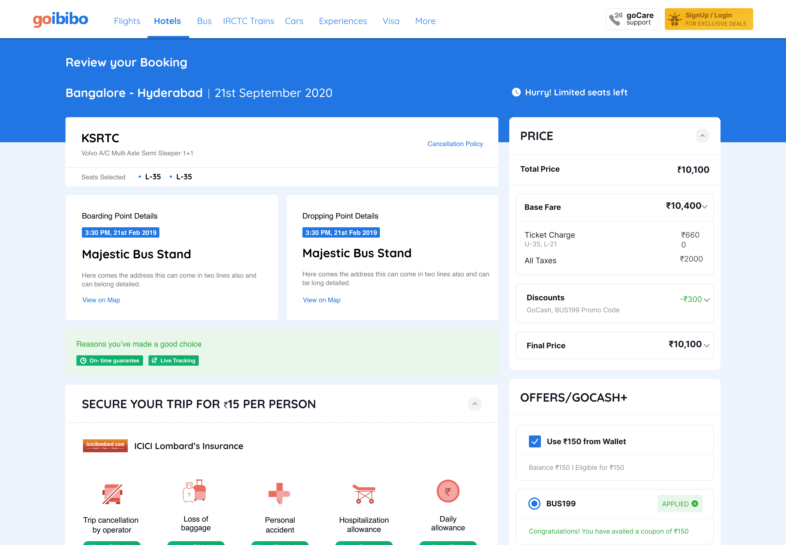
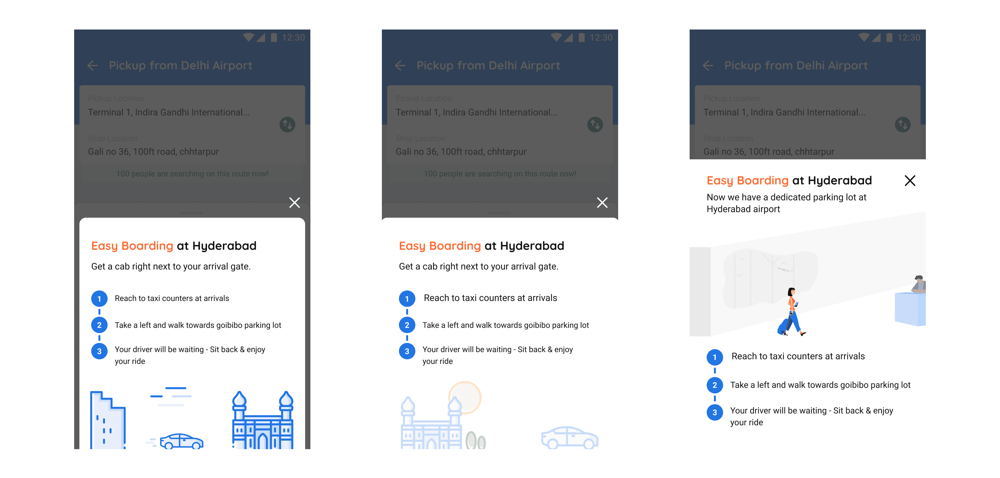

MakeMyTrip
Cutting checkout time 72% for 82M monthly travellers

The Problem
I spent my first month not designing anything.
Instead I audited the whole buses and cabs experience, built a flowchart mapping how every part of the company connected, and put together a deck on what I thought was broken. Inconsistent design system, wasted space, visual hierarchy that had quietly given up. I also critiqued GoIbibo's app while I was at it, unprompted.
I presented it expecting to be told which parts I'd got wrong. They put me on the biggest problem in it: users were dropping off hard during seat selection and at payment , and people were coming back after booking with questions because information had never made it onto their screen.
What I built
Filtered Searches
Actually narrowed things down; departure time, bus type, amenities.
Loading and error states
Silence reads as broken. Plus ghost loaders, so waiting felt like progress rather than a stall.
A universal seat selection system
This was the hard one. Buses have wildly different layouts: sleeper, semi-sleeper, seater, double-decker; and each needs its own representation. I built a step-by-step mechanism that adapts to whatever layout it's handed, rather than twelve special cases.
Checkout
Clear coupon actions and a step-by-step payment guide.






The decision
The obvious fix was to strip it down. Fewer steps, less information, faster to payment. I didn't, and this is the part worth explaining.
MakeMyTrip needs to cross sell. Flights, hotels, trains, cars; the review page is among the most commercially valuable real estate on the platform. A pure simplification would have improved my metric and quietly cost the business money.
So I restructured when information appeared instead of removing it. Step-by-step navigation, clear transitions, a live review of selections always visible. Cross-sell stayed re-positioned so it never competes with the thing the user came to do.
The second project; Airport Cabs
Same principle, worse conditions: people landing at an airport, stressed, dragging luggage, trying to find their cab.
I built step-by-step illustrated boarding instructions and we A/B tested two versions. Version two won; chosen on support-call volume plus feedback from the staff working the airport booths, not on which one I preferred.

The result
User interviews confirmed people felt less lost hunting for bus information, and support calls dropped.
Looking at that cab onboarding again, would bigger steps have worked better? The distinction between 1, 2, 3 isn't strong enough. And "Take a left from taxi counters to reach the GoIbibo parking and get into your cab" is a mouthful for someone reading it one-handed with a suitcase in the other.
Helping 1M+ merchants find what they need, 14% faster